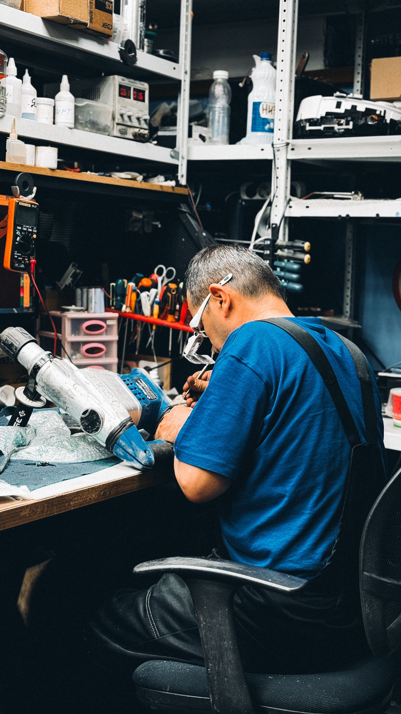

Kami menyediakan layanan servis laptop dan HP yang cepat dan andal untuk mengembalikan perangkatmu ke kondisi terbaik. Layar retak, baterai bermasalah, atau kendala software, semua kami tangani.
Booking online sekarang, pilih metode antar/jemput, dan pantau status perbaikannya.
Booking SekarangPilihan layanan servis untuk HP, laptop, dan tablet dengan harga transparan. Klik kartu untuk melihat detail dan garansi.
Layanan servis untuk semua perangkat, mulai dari HP sampai laptop, dikerjakan oleh teknisi berpengalaman.
Teknisi kami sudah menangani ratusan kasus servis, mulai dari kerusakan ringan hingga yang cukup rumit.
Setiap perbaikan yang kami lakukan disertai garansi, jadi kamu bisa lebih tenang setelah servis selesai.
Hasil pemeriksaan disampaikan secara jelas sebelum perbaikan dimulai, tanpa ada biaya tersembunyi.
Servis ringan bisa selesai dalam hitungan jam, bukan hari. Kami menghargai waktu pelanggan.
Kami menggunakan sparepart original atau kompatibel berkualitas untuk menjamin hasil perbaikan.

FIXIN menangani perbaikan HP, laptop, dan tablet dengan proses kerja yang jelas dan harga transparan, sehingga pelanggan tahu persis apa yang mereka bayar.
Setiap perbaikan dicatat dan disertai garansi sesuai jenis layanan.
Sebagian besar servis ringan selesai dalam hitungan jam, bukan hari.
Estimasi biaya disampaikan di awal, tanpa biaya tersembunyi.
Harga di bawah ini bersifat estimasi dan dapat berbeda tergantung tipe perangkat serta tingkat kerusakan.
⚠️ Harga dapat berubah tergantung tipe perangkat, tingkat kerusakan, dan hasil pemeriksaan teknisi. Estimasi final akan disampaikan setelah diagnosis.
Contoh testimoni untuk pratinjau tampilan. Ulasan pelanggan asli akan ditampilkan di sini.
“Laptop kembali lancar setelah upgrade SSD. Penjelasan teknisinya mudah dipahami dan biaya sudah jelas dari awal.”
“Layar HP sudah normal lagi. Booking praktis, dan saya bisa melihat progres perbaikan lewat kode servis.”
“Laptop yang tadinya cepat panas sekarang lebih nyaman dipakai. Hasil pemeriksaan dijelaskan sebelum pengerjaan.”
“Keyboard kembali enak digunakan untuk kerja. Prosesnya rapi, dan informasi garansi disampaikan dengan jelas.”
“Baterai HP kembali tahan untuk aktivitas sehari-hari. Estimasi biaya dan waktu pengerjaan diberikan sejak awal.”
“Dibantu backup sebelum install ulang, jadi lebih tenang. Laptop sekarang siap dipakai lagi untuk kuliah.”
“Masalah software dijelaskan dengan bahasa sederhana. Saya jadi tahu penyebabnya dan cara merawat perangkat.”
“Baterai laptop sudah diganti dan bisa dipakai tanpa terus tersambung charger. Pelayanannya ramah dan komunikatif.”
Booking servis sekarang dan lacak progresnya kapan saja lewat kode servis.
Booking SekarangTemukan jawaban untuk pertanyaan umum seputar layanan servis FIXIN.
Durasi tergantung jenis kerusakan. Servis ringan seperti install ulang atau cleaning bisa selesai dalam hitungan jam. Untuk kerusakan hardware seperti ganti layar atau baterai, estimasi 1-2 hari kerja. Kami selalu menginformasikan estimasi waktu sebelum memulai.
Ya, setiap servis yang kami lakukan disertai garansi. Durasi garansi bervariasi tergantung jenis layanan, mulai dari 7 hari hingga 30 hari. Detail garansi akan disampaikan sebelum pengerjaan dimulai.
Keamanan data pelanggan adalah prioritas kami. Kami tidak mengakses data pribadi kecuali diperlukan untuk proses perbaikan. Untuk install ulang, kami akan menginformasikan jika ada risiko kehilangan data dan menawarkan backup terlebih dahulu.
Sebagian besar kerusakan bisa ditangani. Namun untuk kasus tertentu seperti kerusakan motherboard parah atau perangkat yang sudah discontinue sparepart-nya, kami akan menginformasikan secara jujur jika perbaikan tidak memungkinkan.
Tentu! Kami selalu memberikan estimasi biaya setelah proses diagnosis awal. Tidak ada biaya tambahan tanpa persetujuan pelanggan terlebih dahulu.
Kami melayani servis untuk HP (semua merek), laptop (semua merek dan tipe), serta tablet. Mulai dari kerusakan software hingga hardware.
Setelah booking, kamu akan mendapatkan kode servis unik. Gunakan kode tersebut di halaman Lacak Servis untuk memantau progres perbaikan secara real-time.